Integração com o Magalu
A integração com o Magalu Marketplace conecta a loja do marketplace ao ERP da Olist. Você importa pedidos automaticamente, controla estoque e preços pelo ERP, envia e recebe produtos, efetua cotações de frete, transmite dados de NF-e e rastreio e sincroniza a situação Entregue.
A conexão fica em Início > Integrações, pelo instalar do canal, ou pela autorização do ERP da Olist no painel da Magalu. Depois de conectar, você define regras de imagens, SKU, estoque, depósito, fulfillment, etiquetas e comissão.
Importante
- Só é possível vincular uma conta do Magalu a uma conta do ERP.
- No login da Magalu, use perfil de pessoa jurídica. Perfil de pessoa física não funciona.
- A integração só fica disponível para uso depois que você conclui todas as etapas do fluxo guiado de configuração.
- Para anunciar, o Magalu considera: nota no Reclame Aqui acima de Bom, boa reputação, produtos idôneos, sortimento diversificado e qualificado, pelo menos um ano de existência, ausência de processos que abalem a reputação, boa avaliação em sites e redes sociais, conta-corrente vinculada ao CNPJ do contrato, CNPJ ativo há mais de seis meses e razão social.
- O envio do anúncio exige descrição complementar preenchida. O botão com problema (E) indica o que impediu o envio.
- Somente o atributo certificado de homologação da Anatel é enviado. Ele precisa estar na ficha técnica do produto.
- Para enviar dimensões, a conta precisa da extensão embalagens e de uma embalagem definida no cadastro do produto.
- Para enviar rastreio, o pedido ou a nota precisa identificar o transportador como Correios ou Transportadora e ter agrupamento (PLP ou Coleta) na expedição.
- Para marcar entregue no ecommerce, o pedido já precisa estar despachado no ecommerce.
Instruções
Pela tela do ERP
-
Acesse Início > Integrações.

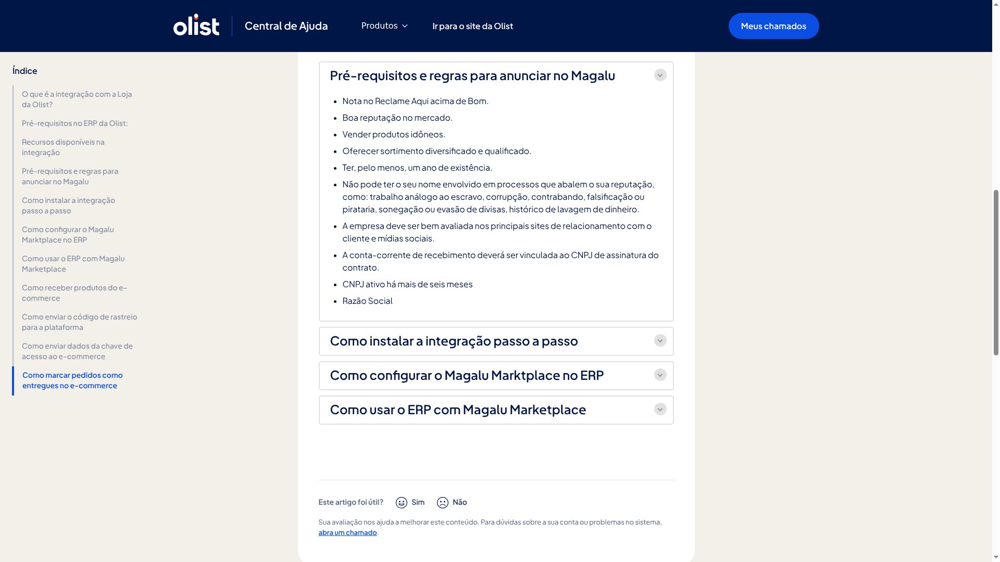
-
Se o card Magalu Marketplace estiver com a situação NÃO CONECTADA, clique em gerenciar. A tela de conexão abre de novo, sem abas de gerenciamento. No menu de contexto do card estão Excluir todos os anúncios no ERP e Excluir integração.
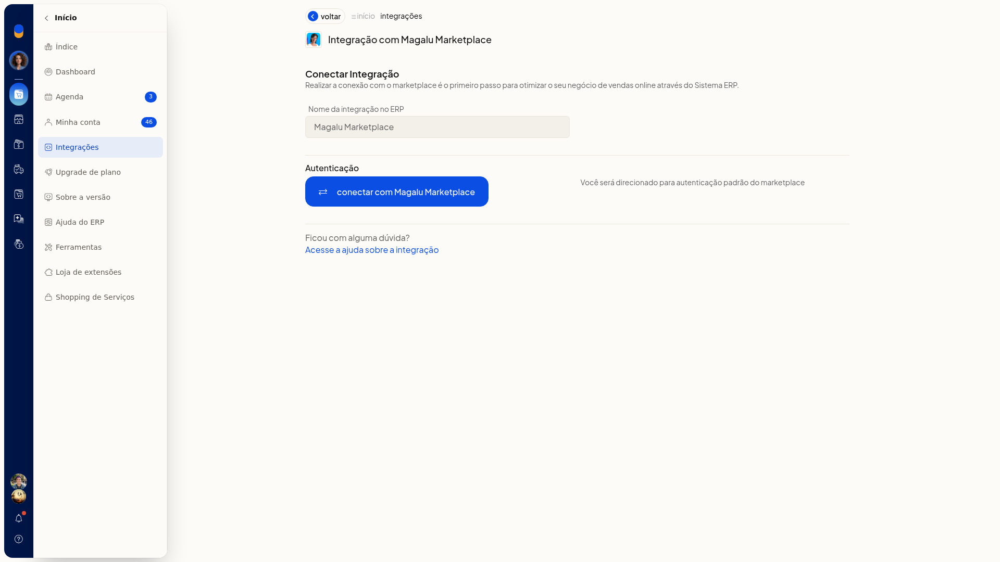
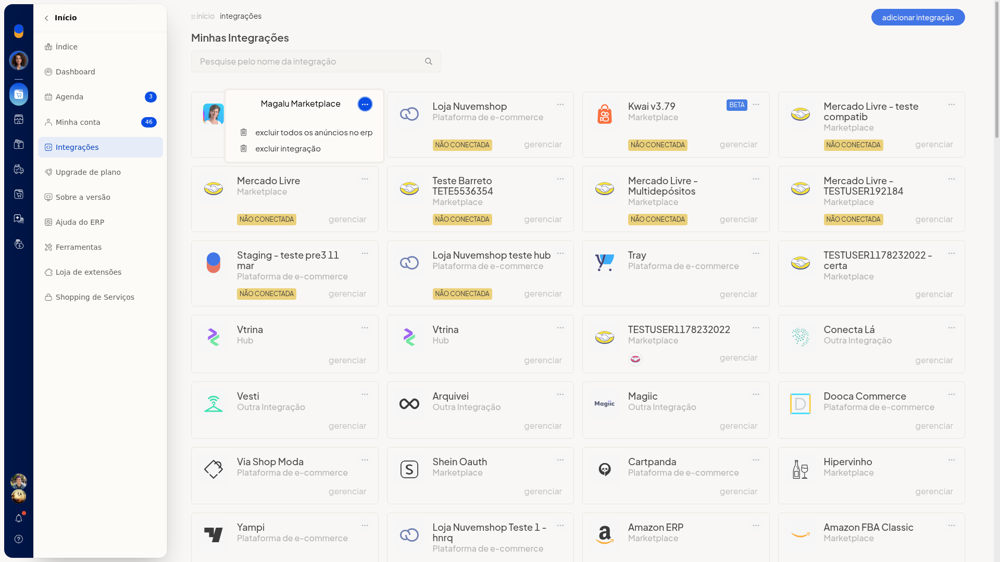
-
Clique em Adicionar integração.
-
Em Marketplaces e Hubs, localize Magalu Marketplace e clique em instalar. A busca por Magalu retorna somente esse canal.
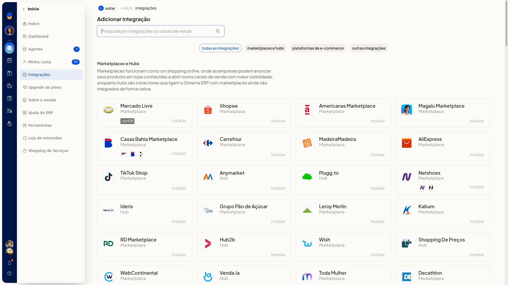
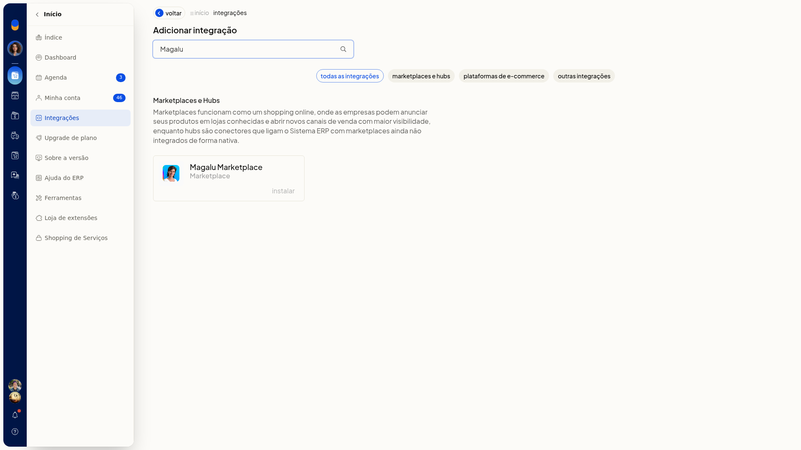
-
Em Conectar Integração, confira Nome da integração no ERP. O campo não é obrigatório, vem preenchido com Magalu Marketplace e você pode alterar o nome.
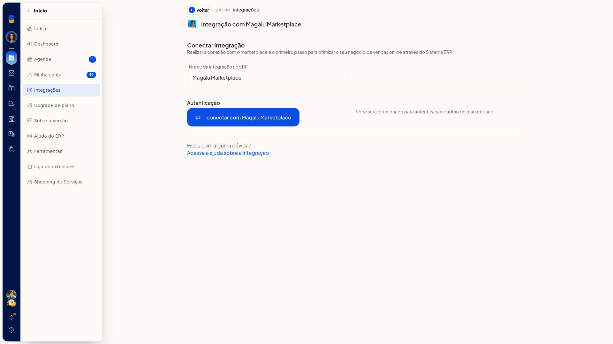
-
Clique em conectar com Magalu Marketplace. Você é direcionado para a autenticação padrão do marketplace. Conclua o login com perfil de pessoa jurídica. Até a autenticação terminar, a tela permanece em Conectar Integração e o card continua NÃO CONECTADA.
Pelo painel da Magalu
-
No painel da Magalu, acesse menu > gestão de integradoras.
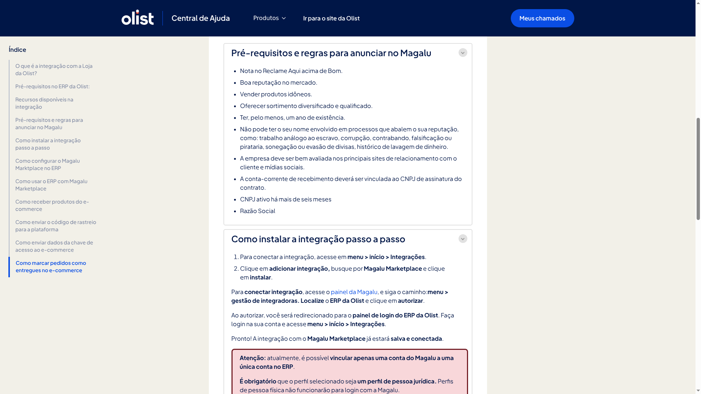
-
Localize ERP da Olist e clique em autorizar.
-
Conclua o login do ERP. Em Início > Integrações, a integração já aparece salva e conectada, sem passar pelo instalar do catálogo.
Na configuração do conector
-
Depois da conexão, siga o fluxo guiado de configuração. Para pausar, clique em Continuar depois, no rodapé, e retome depois.
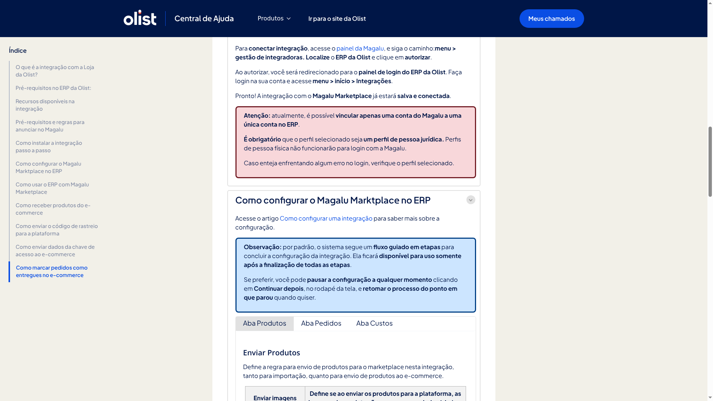
-
Na Aba Produtos, defina os campos abaixo. Nenhum é obrigatório.
- Enviar imagens dos produtos ao sincronizar
- Ao importar produtos
- Na importação de produtos, ao atualizar um produto, atualizar o Código (SKU)
- Importar anúncios com uma variação como anúncios simples
- Atualizar estoque na loja virtual a partir do ERP
- Depósito a ser considerado na integração: só aparece com a extensão depósitos de estoque instalada
- Utilizar Magalu Fulfillment
- Utilizar estoque de segurança: informe a quantidade de itens. Ao atingir esse número, o saldo enviado à plataforma é zero. Estoque de segurança não é considerado para produtos sob encomenda.
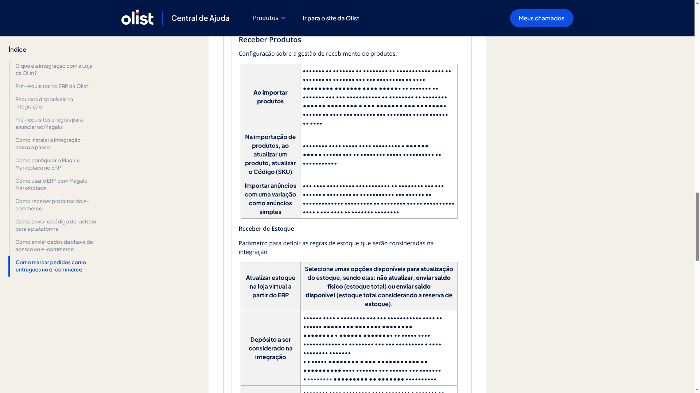
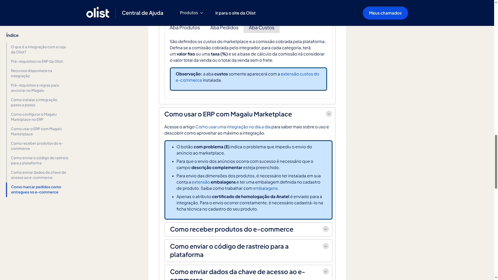
-
Na Aba Pedidos, defina os campos abaixo. Nenhum é obrigatório.
- Sincronização automática dos pedidos: cobre as situações New, Approved, Finished e Cancelled
- Enviar rastreamento ao alterar a situação no ERP para enviado
- Método de impressão de etiquetas
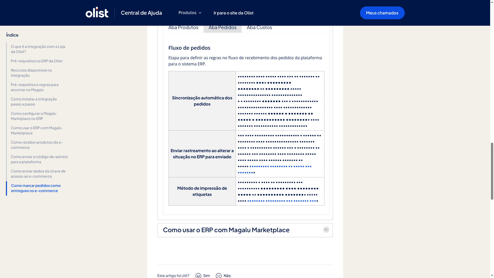
-
Conclua todas as etapas do fluxo guiado. As regras de produtos, pedidos e custos ficam definidas, e a integração passa a ficar disponível para uso. Com a extensão custos do e-commerce instalada, a Aba Custos aparece. Nela, defina Comissão por categoria (valor fixo ou taxa (%)) e Base de cálculo da comissão (valor total da venda ou total sem o frete). Os dois campos não são obrigatórios.
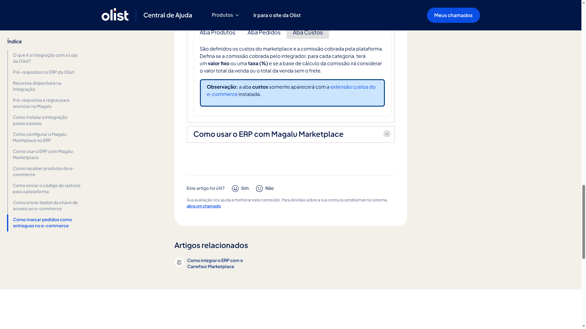
Para receber produtos do ecommerce
-
Acesse menu > cadastros > produtos > receber do e-commerce.
-
Selecione a loja no campo integração e clique em continuar importação de anúncios. Para um anúncio individual, preencha identificador do anúncio.
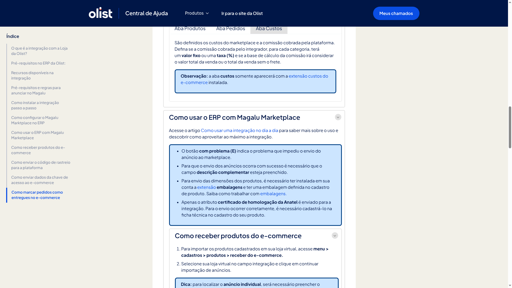
-
Relacione os anúncios aos produtos do ERP por mesmo código (SKU), mesma descrição (título) ou mesmo GTIN (EAN).
-
Escolha sim ou não para atualizar produtos já relacionados. Se sim, escolha atualizar todos os dados ou apenas dados não preenchidos, atualizar preço, estoque ou imagens e clique em relacionar.
-
Marque criar produtos novos com base nos anúncios. Na criação, selecione o depósito, marque importar as imagens do anúncio para os novos produtos e, se quiser, informe unidade, NCM e origem padrão.
-
Clique em criar produtos. Os anúncios da loja Magalu são relacionados ou criados como produtos no ERP. A opção criar exceções na lista de preços vinculada ao e-commerce cria ou atualiza produtos com preços diferentes.
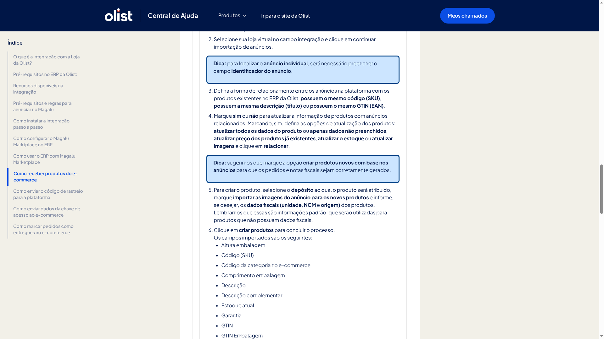
Para enviar o código de rastreio
-
Identifique o transportador, Correios ou Transportadora, no pedido de venda ou na nota fiscal e gere o agrupamento (PLP ou Coleta) na expedição.
-
Acesse início > vendas > expedição. A expedição passa a exibir um marcador quando o código de rastreio já foi enviado à plataforma.
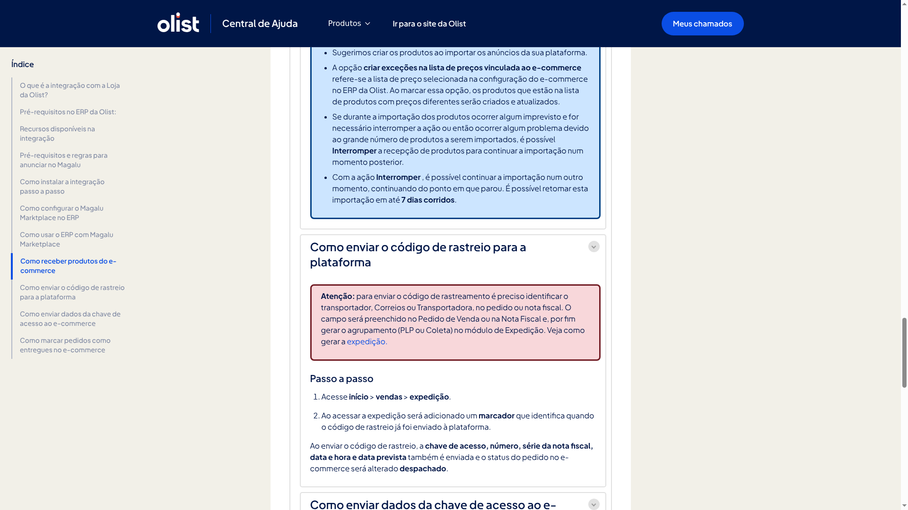
-
Envie o rastreio pela expedição. Também seguem chave de acesso, número, série, data e hora e data prevista, e o status no ecommerce muda para despachado.
Para enviar a chave de acesso
-
Acesse Início > Vendas > Expedição.
-
Adicione o filtro Agrupamentos, selecione a visualização visão por pedidos e, no filtro por forma de envio, selecione Transportadora.
-
Localize o número de expedição, abra o menu de contexto (...) e selecione Enviar chave de acesso para o e-commerce. O XML também é enviado para otimizar a validação da nota, e o status no ecommerce muda para despachado.
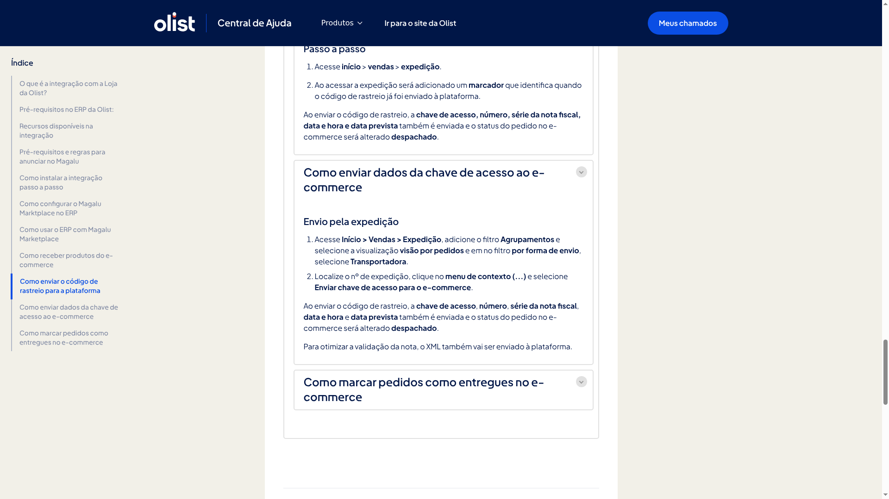
Para marcar pedidos como entregues
-
Acesse menu > vendas > expedição.
-
Selecione a forma de envio e, na aba concluídas, abra o menu de contexto (...) e escolha marcar pedidos como entregue. O pedido precisa já estar despachado no ecommerce. O pedido marcado como entregue no ERP é sincronizado com o status entregue na plataforma.
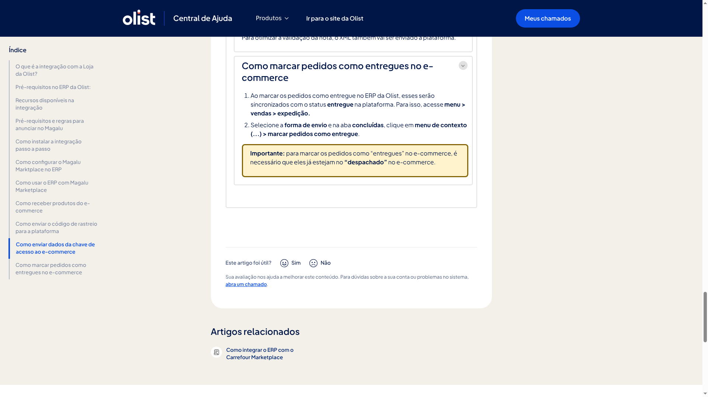
Resultado
Depois de autorizar o ERP da Olist no painel da Magalu, em Início > Integrações a integração fica salva e conectada. O envio do rastreio ou da chave de acesso altera o status do pedido no ecommerce para despachado. Marcar entregue sincroniza o status entregue.
Informações adicionais
- A integração está disponível para todos os planos.
- A situação Shipped não é sincronizada automaticamente. Para pedidos já selecionados, acesse vendas > pedidos de venda e use sincronizar situação.
- Se a importação de produtos for interrompida, a ação Interromper permite retomar do ponto em que parou em até 7 dias corridos.